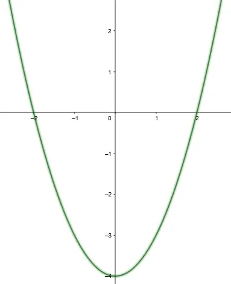

Função quadrática
A função quadrática é uma relação entre reais representada na forma "f(x) = ax² + bx + c"
Sua representação no plano cartesiano é uma parábola, e essa função possui duas raízes

Propriedades da função quadrática
Concavidade da parábola
O coeficiente a representa a concavidade de uma parábola. Se a > 0, a parábola é côncava para cima e possui ponto mínimo, e se a < 0, a parábola é côncava para baixo e possui ponto máximo. Se a for igual a 0, a função não é quadrática, mas sim, afim.
Coeficientes b e c
O coeficiente b representa se a parábola atravessa o eixo y crescendo ou decrescendo. Se b > 0, a parábola atravessa y crescendo. Se b < 0, a parábola atravessa y decrescendo. Se b = 0, a parábola passa por y em seu ponto mínimo ou máximo.
Já o coeficiente c representa o ponto no qual a parábola passa pelo eixo y.
Raízes da função quadrática
A função quadrática possui duas raízes, que podem ser encontradas por meio de várias formas:
Soma e produto
Soma: a soma das duas raízes da função é igual a -b/a
Produto: o produto entre as duas raízes é igual a c/a
Com isso, é possível fazer um sistema de equação e achar as raízes da função.
Fórmula de Bháskara
Para calcular com a fórmula de Bháskara, primeiro se acha o valor de delta.
Δ = b² - 4 . a . c
Com isso, calculamos o valor das raizes:
x = (-b +- √Δ) / 2 . a
Trinômio quadrado perfeito (T.Q.P)
Para achar as raizes da função de segundo grau por meio do
t.q.p, devemos fatorar a equação de segundo grau, como no exemplo:
x² + 6x + 9 → (x + 3)²
Depois disso, basta achar os valores de x resolvendo a equação normalmente.